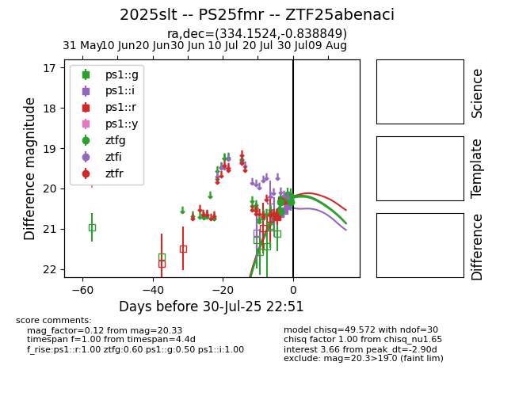

Target 2025slt at 2025-07-30 22:51, see:
FINK: fink-portal.org/2025slt
Lasair: lasair-ztf.lsst.ac.uk/objects/2025slt
ALeRCE: alerce.online/object/2025slt
TNS: wis-tns.org/object/2025slt
YSE: ziggy.ucolick.org/yse/transient_detail/2025slt
alt names
ZTF25abenaci (ztf,fink)
2025slt (tns,yse)
PS25fmr (panstarrs)
coordinates:
equatorial (ra, dec) = (334.1524,-0.83885)
galactic (l, b) = (61.6625,-44.51582)
photometry
last ps1::g=20.33, ps1::i=20.44, ps1::r=20.30, ztfg=20.33
5 ps1::g, 3 ps1::i, 3 ps1::r, 6 ztfg detections
